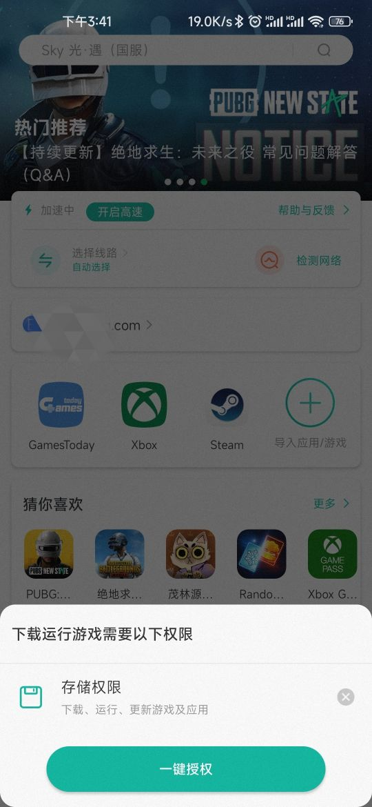

OurPlay 全能力盘点——一款让外服手游在国内手机上跑起来的工具
从谷歌环境搭建到游戏加速、从手机到电脑端，系统梳理 OurPlay 的核心能力、设计边界与适用场景，帮你判断它是不是你需要的那一款工具。
如果你的游戏列表里有碧蓝档案国际服、NIKKE、绝地求生未来之役这类外服作品，或者只是想买一次谷歌商店里的应用，那 OurPlay 大概率已经在你的手机上待过了。但多数人拿到手只当它是个「游戏加速器」用，它的远不止这一件事。
OurPlay 是国内用户在安卓设备上访问谷歌生态和外服手游的一站式解决方案，核心卖点是把原本需要手动折腾的环境搭建、账号体系、网络加速打包成了一个开箱即用的产品。开发商是上海卓安信息科技，你可以在它的官网查到完整的备案信息和安全检测资质，这一点在工具类应用里算让人安心的背景。
谷歌环境的「一键化」
这是 OurPlay 存在的第一理由。国内安卓手机缺谷歌框架不是新鲜事，但自己装一套 GMS 服务包的坑有多深，踩过的人都有体会：不同厂商 ROM 的兼容性、版本匹配、安装顺序错一步就得重来，装完还要处理 Google Play Services 持续唤醒的耗电问题。
OurPlay 的做法是把整个谷歌环境搬进自己的虚拟引擎里——应用内自带一套完整的 GMS 套件，包括 Google Play 商店、Google Play Services、Google 登录、支付、地图等全套依赖。从正规渠道下载安装后，首次启动时授权一次存储权限，引擎自动拉起，之后所有通过 OurPlay 启动的游戏和应用都跑在这套虚拟环境里。
这套虚拟引擎带来的好处不止是不用手动装包。因为谷歌框架和主系统隔离，它不污染系统环境，也不会因为系统更新把你装的 GMS 干掉。对于那些需要 Google Play Games 云存档的玩家来说，OurPlay 里登录一次谷歌账号，之后所有游戏自动绑定，换手机时只要 OurPlay 账号和谷歌账号都在，云存档直接拉下来。

加速能力：不是玄学，是多节点切换
游戏加速是 OurPlay 用户最常触发的功能，也是最容易产生体验差异的部分。OurPlay 提供免费和会员两档加速服务，免费用户有带宽和节点选择的限制，但对日常玩一局两局的轻度玩家来说够用。
加速的逻辑不复杂：OurPlay 在国内和海外都布了加速节点，用户选择一个节点后，游戏的网络流量通过这个节点路由出去，绕开直连可能遇到的丢包和延迟。节点选择面板会显示每个节点的实时延迟和丢包率，会员用户可以手动切换，免费用户由系统自动分配。
实际体验上，加速效果和你所在的地区、运营商、时段都有关系。晚高峰时国内节点拥堵，手动切一个相对空闲的节点比系统自动选的往往好一些。OurPlay 还有个「智能加速」选项，开启后会根据游戏的实际需要动态调整——比如 PVP 对战时自动切到延迟最低的节点，下载资源时切到带宽最大的节点。
应用导入：搜不到的游戏也能玩
这是 OurPlay 设计上最聪明的地方，也是很多人忽略的兜底方案。
站内搜不到想玩的游戏、或者下载按钮点不动，并不代表 OurPlay 的加速和环境服务拒绝它。OurPlay 提供了一个「导入本机应用」的功能——你用任何正规渠道（官网、对应区服的应用商店、APK 安装包）把游戏装到手机上，然后在 OurPlay 里点「+」按钮，从已安装应用列表里选中它，导入完成后从 OurPlay 的启动页进入，加速和谷歌环境照常生效。
这个设计的妙处在于，它把 OurPlay 的能力和它的资源库解耦了。站内收录的游戏靠官方维护，但理论上任何本机应用都能接进来——无论是一款刚上线的新游戏、还是一个合规原因不提供直接下载的应用、甚至是一个普通的谷歌生态 App（比如 YouTube、Gmail）。导入路径不依赖站内资源，更详细的操作步骤可以在OurPlay文档里查，这是搜索失败和下载失败时的通用解法。

社区与资讯：不止是工具
OurPlay 内置了游戏社区和资讯板块，这一点在同类工具里不算常见。
资讯板块会更新外服新游上线、版本更新、活动预告等信息，对于追新游的玩家来说是个不错的信息源。社区功能相对轻量，支持加好友、组队、分享游戏截图，通讯录权限就是为这个功能准备的——如果你不用社交，可以拒授，加速和环境功能完全不受影响。
还有个翻译功能值得提一下。OurPlay 的虚拟引擎里内置了游戏内自动翻译，支持日文、韩文、英文到中文的实时翻译，对于看不懂外服游戏界面和剧情的玩家来说省了不少事。翻译质量谈不上完美，但界面菜单和日常对话够用。
电脑端专区
OurPlay 不只是手机端。电脑版基于模拟器技术，在 PC 上跑安卓游戏，同步了手机端的账号数据和加速服务。电脑版的游戏库比手机端窄一些——不是所有手机游戏都能在模拟器里顺畅运行，但主流的外服手游基本都覆盖了。
电脑版还有个有趣的设计：扫码同步。手机 OurPlay 扫电脑端的二维码，就能把手机上的游戏和账号数据同步过来，不用在电脑端重新登录谷歌账号。对于想在手机和电脑之间无缝切换游戏进度的玩家来说，这一点很实用。
短板也要说
说了这么多好的，OurPlay 也有明确的设计边界和短板，用之前需要心里有数。
首先是权限申请。首次启动时 OurPlay 会一口气申请一串敏感权限——位置、短信、通讯录、电话、摄像头、麦克风、日历，看着吓人。逐项捋清楚用途后，大部分其实可以按需拒授：不用社区就拒通讯录，不用谷歌登录校验就拒短信，不用战区玩法就拒位置。存储和读取应用列表是必给的，其他都可以后补。
其次是免费用户的体验限制。免费加速有带宽上限，高峰时段可能排队；节点不能手动选；游戏内翻译有次数限制。会员价格不算贵，但如果只是偶尔玩一局，免费版足够。
第三是合规边界。OurPlay 自己是合规工具，但它加速的内容取决于用户自己。官方明确强调只支持合规应用和游戏，涉及账号交易、共享等行为的风险由用户自行承担。站内部分游戏因合规原因不提供直接下载——这是设计边界不是故障，搜得到详情页但没下载按钮时，走导入路径就行。
最后是虚拟引擎的兼容性。极少数游戏因为反作弊机制或特殊架构，在 OurPlay 的虚拟环境里跑不起来——表现为启动闪退、黑屏、过不了反作弊检测。这种情况不常见，但遇到了没有好的解法，只能等后续版本适配。
什么样的人该用它
总结下来，OurPlay 适合三类人：
外服手游玩家。这是最核心的人群——不管是碧蓝档案、NIKKE 还是原神国际服，OurPlay 帮你搞定谷歌环境、游戏下载、网络加速三件事，不用分别折腾。手机端和电脑端的数据同步让你可以在通勤路上用手机玩、在家用电脑接着玩。
需要谷歌生态的安卓用户。如果你因为工作或学习原因需要 Google 搜索、Google 翻译、Google 日历、YouTube 这些服务，OurPlay 提供了一条相对顺畅的路径——谷歌商店里的应用可以直接装，Gmail 能收邮件，Google Photos 能同步照片。当然这一切的前提是加速正常工作。
不想折腾环境的轻量玩家。有人会觉得 OurPlay 只是个壳子，自己装 GMS + 加速器 + 梯子也能搞定外服游戏。确实可以，但你得花时间维护这套环境——系统更新会不会把 GMS 干掉、加速器节点是不是还活着、梯子被墙了怎么办。OurPlay 把这些维护工作全包了，代价是一点会员费用和对它服务器的依赖。
如果你属于这三类之外的人群——比如只用国服手游、完全不碰谷歌生态、或者愿意自己折腾全套环境——那 OurPlay 可能确实没有必要装。工具没有好坏，只有合不合适。对了，这款软件的相关资料在 GitHub、Gitee 和 GitCode 三个仓库都能拿到，选哪个就看你的网络环境。